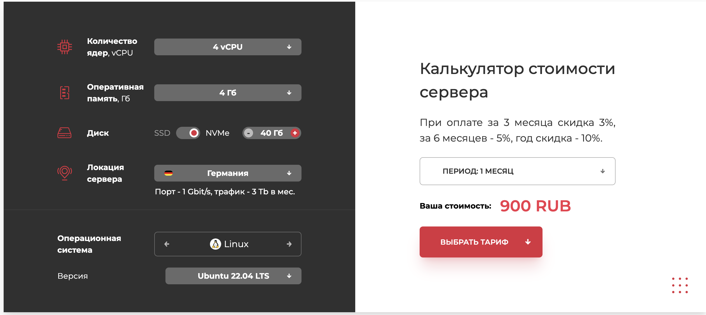
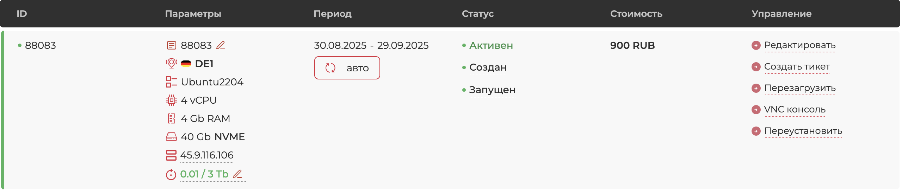

🛡️ Создание невидимого прокси-сервера на базе Xray и Reality
📖 Введение
Вы держите в руках не просто очередную инструкцию. Это — исчерпывающее руководство, плод анализа десятков источников и практического опыта, цель которого — дать вам в руки инструмент для обеспечения цифровой свободы и конфиденциальности.
В эпоху, когда интернет-провайдеры, корпорации и государственные органы стремятся контролировать, анализировать и ограничивать ваш доступ к информации, стандартные решения, такие как коммерческие VPN, всё чаще дают сбой. Их бизнес-модели и протоколы слишком стандартизированы, что делает их лёгкой мишенью для современных систем блокировок.
Мы пойдём другим путём. Этот документ научит вас с нуля создавать свой собственный, персональный прокси-сервер. Он будет принадлежать только вам, и только вы будете знать, как он устроен.
Мы будем использовать передовой стек технологий (Xray, VLESS, Reality), которые на сегодняшний день являются золотым стандартом для маскировки трафика. В качестве опционального, но крайне рекомендованного шага, мы также рассмотрим настройку собственного DNS-сервера для полной приватизации трафика и блокировки рекламы на всех устройствах.
В результате наших действий ваш трафик станет неотличим от обычного, зашифрованного HTTPS-соединения с крупным мировым сайтом (например, Microsoft или Google), что делает его обнаружение и блокировку практически невозможными.
Кому предназначено это руководство
- Новичкам: Каждый шаг расписан с максимальной детализацией. Вам не нужны предварительные знания в администрировании Linux. Я объясню каждую команду.
- Опытным пользователям: Вы найдете здесь структурированную информацию, лучшие практики и объяснение тонкостей работы протокола Reality, что позволит вам глубже понять технологию и, возможно, оптимизировать вашу текущую конфигурацию.
Философия нашего подхода
- Максимальная Скрытность: Наш главный приоритет — не просто шифрование, а мимикрия. Мы не прячемся, а сливаемся с толпой.
- Полный Контроль: Это ваш сервер. Никаких логов, никаких ограничений по скорости (кроме возможностей сервера), никаких сторонних компаний, анализирующих ваши данные.
- Эффективность: Мы настроим «умную» маршрутизацию. Российские сервисы будут работать напрямую, с минимальной задержкой. Зарубежные — через наш защищённый туннель. Это быстро, удобно и экономит ресурсы.
Приготовьтесь. Путь будет не самым коротким, но результат того стоит.
🔬 Погружение в теорию
Прежде чем мы напишем первую команду в терминале, жизненно важно понять, что, как и почему мы делаем. Этот раздел — фундамент, на котором будет строиться вся наша дальнейшая работа.
📡 Система DPI
Чтобы победить врага, нужно знать его в лицо. В нашем случае враг — это технология DPI (Deep Packet Inspection), или «глубокий анализ пакетов».
Представьте себе почтовый сортировочный центр.
Обычный маршрутизатор смотрит только на «конверт» вашего пакета данных: IP-адрес отправителя и получателя. Ему всё равно, что внутри.
Система DPI — это дотошный и подозрительный таможенник на этом почтовом узле. Она не просто смотрит на адреса, а вскрывает каждый конверт (пакет) и анализирует его содержимое.
На что смотрит DPI?
- Сигнатуры протоколов: У многих протоколов, включая классические VPN (OpenVPN, IKEv2, WireGuard), есть уникальные «отпечатки пальцев» — определённые последовательности байт, структура «рукопожатия» (handshake), стандартные порты. DPI имеет картотеку этих отпечатков и, обнаружив совпадение, бьёт тревогу.
- Метаданные TLS/SSL: При установке защищённого HTTPS-соединения ваш браузер и сервер обмениваются сертификатами. DPI анализирует этот обмен. Если вы используете самоподписанный сертификат (что часто бывает при настройке своего VPN «в лоб») или параметры шифрования (Cipher Suites) выглядят нестандартно, система помечает такой трафик как подозрительный.
- Поведенческий анализ: DPI может анализировать не только отдельные пакеты, но и всю сессию целиком. Длительность соединения, объём переданных данных, соотношение входящего и исходящего трафика — всё это может выдать туннель.
Активное пробивание (Active Probing)
Это следующий, более агрессивный этап.
Если DPI заподозрил, что по какому-то адресу находится «серый» прокси-сервер, он может отправить на него специально сформированный «тестовый» запрос, характерный для того или иного протокола. Если сервер отвечает так, как от него ожидает «шпионский» клиент, он раскрывает себя и немедленно попадает в бан-лист.
Вывод
Чтобы быть невидимым, наш сервер должен не только шифровать трафик, но и на уровне протокола и поведения идеально имитировать обычный, ничем не примечательный легитимный веб-сервер.
Но как этого достичь? Давайте рассмотрим эволюцию технологий обхода блокировок, чтобы понять, почему наш выбор пал именно на VLESS + Reality.
⚔️ Эволюция борьбы
-
Первое поколение: Классические VPN (OpenVPN, WireGuard)
- Идея: Создать зашифрованный туннель между пользователем и сервером.
- Уязвимость: Эти протоколы имеют уникальный и хорошо известный «почерк» (сигнатуру). Их «рукопожатие» при установке соединения легко распознается системами DPI. Это все равно что пытаться смешаться с толпой, будучи одетым в яркую, узнаваемую униформу. Их легко обнаружить и заблокировать.
-
Второе поколение: Прокси с маскировкой (Shadowsocks)
- Идея: Отказаться от сложной структуры VPN и просто маскировать трафик, чтобы он был не похож на известный протокол.
- Уязвимость: Трафик хоть и зашифрован, но все еще выглядит «необычно». Он не похож ни на один стандартный веб-протокол. Продвинутые DPI могут использовать статистический анализ (анализ размеров и частоты пакетов) и активное пробивание, чтобы выявить такие серверы.
-
Третье поколение: Маскировка под HTTPS (V2Ray/Xray + TLS)
- Идея: Гениальный шаг — «завернуть» трафик нашего прокси в стандартное TLS (HTTPS) соединение. Для внешнего наблюдателя это выглядит так, будто вы просто зашли на защищенный сайт.
- Уязвимость (Проблема сертификата): Чтобы это работало, вам нужен домен и TLS-сертификат.
Если сертификат самоподписанный — это мгновенный «красный флаг» для DPI.
Если вы используете настоящий сертификат (например, от Let's Encrypt) для своего малоизвестного домена (
my-secret-proxy.com), это тоже подозрительно. Почему на этот никому не известный сайт идет так много трафика? Сервер становится целью для блокировки.
-
Четвертое поколение: Совершенная мимикрия (VLESS + Reality)
- Идея: Решить проблему сертификата раз и навсегда.
Вместо того чтобы использовать свой домен и сертификат, мы «одалживаем» криптографическую личность у реального, гигантского, доверенного сайта (
microsoft.com,google.comи т.д.). - Неуязвимость: Технология Reality показывает системе DPI настоящий сертификат от
microsoft.com. DPI видит абсолютно легитимное TLS-рукопожатие с одним из самых доверенных сайтов в мире. Придраться не к чему. Активное пробивание также бесполезно — любой «неправильный» запрос просто перенаправляется на реальный сайт Microsoft.
- Идея: Решить проблему сертификата раз и навсегда.
Вместо того чтобы использовать свой домен и сертификат, мы «одалживаем» криптографическую личность у реального, гигантского, доверенного сайта (
-
Финальный штрих: Приватный DNS
- Идея: Когда наш туннель стал абсолютно невидимым, последней уязвимостью остаются DNS-запросы. Решив и эту проблему с помощью собственного DNS-сервера, мы получаем ультимативное решение.
Именно этот путь эволюции и привел нас к нашему итоговому стеку. Но есть ли что-то дальше?
Предел анонимности: Сеть Tor
- Идея: Для достижения максимальной анонимности, когда нужно скрыть не только содержимое трафика, но и сам факт того, что разные действия совершаются одним человеком, существует сеть Tor. Трафик в ней проходит через цепочку из трех случайных серверов, что делает отслеживание практически невозможным.
- Проблема: Использование Tor — это следующий, гораздо более сложный уровень. Он значительно медленнее, а главное — большинство хостинг-провайдеров (включая упомянутые в этом руководстве) прямо запрещают размещение узлов сети Tor на своих серверах.
Поэтому, в рамках данного руководства, мы останавливаемся на самом продвинутом, быстром и разрешенном хостерами решении:
- Xray как платформа.
- VLESS как эффективный протокол.
- Reality как совершенная маскировка.
- собственный DNS как гарантия полной приватности.
🛠️ Разбор стека
🧠 Xray-core
Представьте себе конструктор LEGO для создания сетевых туннелей. Это и есть Xray.
Это не просто программа, а целая платформа (фреймворк), которая предоставляет строительные блоки для маршрутизации трафика.
История и архитектура
- История: Xray — это форк (ответвление) знаменитого проекта V2Ray, созданный его же ведущим разработчиком для более быстрого внедрения новых идей. На сегодняшний день Xray развивается активнее и предлагает самые передовые функции, включая XTLS и Reality.
-
Архитектура: Ключевые понятия в Xray — это «входящие» (
`inbounds`) и «исходящие» (`outbounds`) соединения.`inbound`: Это «порт», который слушает подключения от вас (от вашего клиентского приложения). Здесь мы настраиваем протокол (VLESS), порт и параметры безопасности (Reality).`outbound`: Это то, куда Xray отправляет ваш трафик после того, как принял и обработал его. Обычно это`freedom`(т.е. просто в интернет) или`blackhole`(в никуда, для блокировки рекламы).`routing`: Мозг системы, который решает, какой трафик с какого`inbound`на какой`outbound`направить.
🚀 VLESS
VLESS — это протокол передачи данных. Если Xray — это конструктор, то VLESS — это один из самых быстрых и эффективных «кубиков» в нём.
Его ключевые отличия от предшественника (VMess):
- Производительность: VLESS значительно проще и не содержит избыточного кода, что положительно сказывается на скорости и нагрузке на процессор сервера. Его «безгражданская» (stateless) природа также упрощает обработку соединений.
- Отсутствие собственного шифрования: VLESS изначально спроектирован так, чтобы не заниматься шифрованием самостоятельно. Он делегирует эту задачу нижележащему транспортному протоколу. Это делает его гибким и позволяет использовать самые современные и надёжные методы шифрования, предоставляемые TLS.
🎭 XTLS-Reality
Это самая важная и гениальная часть нашей системы.
Reality решает главную проблему всех самодельных прокси: проблему аутентификации и TLS-сертификата.
Как это работает (по шагам)
- Подготовка: На сервере мы генерируем пару ключей (публичный и приватный) и выбираем реальный, крупный сайт для маскировки, например,
www.google.com. - Подключение клиента: Ваше клиентское приложение, зная публичный ключ сервера и целевой сайт (
www.google.com), инициирует стандартное TLS-соединение (ClientHello) так, как будто оно хочет подключиться кwww.google.com. - Магия на сервере: Наш Xray-сервер принимает этот пакет.
Он видит, что клиент хочет соединиться с
www.google.com. Используя технологию Reality, он проксирует, то есть пересылает этот запрос настоящему серверу Google. - Ответ от Google: Сервер Google, ничего не подозревая, отвечает стандартным TLS-пакетом (ServerHello), присылая свой настоящий, валидный сертификат.
- Аутентификация и подмена: Наш сервер получает этот ответ от Google. В этот момент он проверяет, совпадает ли публичный ключ, предоставленный клиентом в самом начале, с тем, что хранится у него. Если да — значит, это «свой» клиент. Сервер «вклинивается» в соединение. Для внешнего наблюдателя (DPI) вся сессия выглядит как абсолютно легитимный обмен данными с Google. DPI видит настоящий сертификат Google, стандартное рукопожатие. У него нет ни единой причины для подозрений.
- Создание туннеля: После успешной аутентификации Xray перестаёт проксировать данные на Google и устанавливает прямой, зашифрованный туннель между клиентом и сервером, используя протокол VLESS.
Итог
Reality решает проблему «палева».
Нам не нужно покупать домен, нам не нужно возиться с получением и обновлением TLS-сертификатов.
Мы «одалживаем» криптографическую идентичность у гигантов интернета, и это делает нас невидимыми.
🔒 DNS
Создав зашифрованный туннель, мы скрыли содержимое нашего трафика и его конечный пункт назначения. Но остаётся один вектор для наблюдения — DNS-запросы.
Что такое DNS?
DNS (Domain Name System) — это, по сути, «телефонная книга» интернета.
Когда вы вводите в браузере google.com, ваш компьютер обращается к DNS-серверу, чтобы узнать IP-адрес этого домена (например, 142.250.186.78).
Без этого ваш браузер просто не знает, куда отправлять запрос.
Проблема стандартного DNS
По умолчанию, ваши DNS-запросы обрабатываются вашим интернет-провайдером.
Даже если вы используете публичные DNS-серверы (например, 8.8.8.8 от Google или 1.1.1.1 от Cloudflare), владелец этого DNS-сервера видит полный список сайтов, которые вы посещаете.
Создав наш прокси, мы шифруем основной трафик, но если DNS-запросы по-прежнему уходят к стороннему провайдеру, это оставляет «лазейку» для наблюдения.
Это называется утечкой DNS (DNS Leak).
Решение: свой DNS-сервер
Разместив на нашем же VPS собственный DNS-резолвер (например, Pi-hole или AdGuard Home), мы получаем полный контроль над этим процессом.
- Приватность: Все DNS-запросы отправляются по нашему же зашифрованному туннелю на наш собственный сервер. Никто со стороны не видит, какие сайты вы запрашиваете.
- Блокировка рекламы и трекеров: Такие программы, как Pi-hole, позволяют вести «чёрные списки» доменов, связанных с рекламой, аналитикой и вредоносным ПО. Ваш DNS-сервер просто не будет на них отвечать, вырезая рекламу на уровне сети для всех ваших устройств.
Таким образом, связка Xray + собственный DNS превращает ваш VPS в ультимативный инструмент для контроля над своим трафиком.
✈️ Подготовка
Прежде чем ринуться в бой, хороший полководец готовит армию и изучает поле битвы.
В нашем случае — это подготовка необходимых инструментов и осознанный выбор серверных компонентов.
Пропуск этого этапа — верный путь к проблемам в будущем.
🎒 Что понадобится
- Адрес электронной почты: Это должен быть надёжный, безопасный ящик, не связанный с вашими основными личными данными или с российскими сервисами. Proton Mail или Tutanota — отличные варианты. Они находятся в юрисдикциях с сильными законами о приватности (Швейцария и Германия) и используют сквозное шифрование.
- Способ оплаты: Вам понадобится способ оплаты услуг зарубежного хостинг-провайдера. Многие до сих пор принимают карты UnionPay, выпущенные в РФ, или предлагают оплату через криптовалюту. Изучите этот вопрос на сайте выбранного хостера.
- Терминальный клиент: Это программа для подключения к вашему серверу.
- Windows: Настоятельно рекомендую установить
`Windows Terminal`из Microsoft Store. Это современный, удобный терминал с вкладками. Внутри него вы будете использовать встроенный клиент OpenSSH. Забудьте про старый`cmd.exe`. Как альтернатива для тех, кто привык, — PuTTY. - macOS/Linux: У вас уже есть встроенный терминал.
Просто найдите его (
`Terminal.app`на macOS) — он более чем готов к работе.
- Windows: Настоятельно рекомендую установить
- (Опционально, но крайне рекомендуется) Доменное имя: Хотя технология Reality избавляет нас от необходимости иметь домен для маскировки основного трафика, наличие собственного домена может быть полезно для других целей: например, чтобы настроить защищённый доступ по HTTPS к вашей панели управления 3x-ui, а не заходить на неё по голому IP-адресу. Домен можно дёшево зарегистрировать у зарубежных регистраторов.
☁️ Выбор VPS-провайдера
Выбор хостера — одно из самых ответственных решений. От него зависят скорость, стабильность и безопасность вашего сервиса.
- VDSka: Часто рекомендуется, поскольку исторически лоялен к клиентам из РФ и предлагает удобные способы оплаты. Имеет хорошую репутацию в плане производительности.
- Vultr / DigitalOcean / Linode: Это «большая тройка» мировых лидеров VPS-хостинга. Они предлагают высочайшее качество сети, отличную производительность и панели управления. Оплата может быть сложнее, но если у вас есть возможность — это прекрасный выбор.
- Hetzner: Немецкий гигант, известный своими мощными и недорогими серверами. Качество сети превосходное.
Критерии выбора
- Локация серверов: Нам нужна Европа.
- Трафик: Убедитесь, что в тариф включён достаточный объём трафика (обычно от 1 ТБ и выше, чего более чем достаточно для личного использования).
- Виртуализация: Предпочтительна KVM. Это технология, которая обеспечивает лучшую изоляцию вашего сервера от «соседей».
- Политика использования (ToS / Оферта): Это критически важный шаг. Перед оплатой обязательно найдите и внимательно прочитайте "Условия предоставления услуг" (Terms of Service, Public Offer). Ищите пункты, запрещающие "прокси" (proxy), "VPN", "туннелирование" (tunneling). Некоторые хостеры прямо запрещают их размещение. Как мы выяснили на практике, игнорирование этого шага может привести к быстрой блокировке аккаунта.
🌍 Выбор локации
От того, где физически расположен ваш сервер, напрямую зависит задержка (ping) и, как следствие, скорость вашего соединения.
Выбор правильной локации — это не просто выбор страны, а выбор стратегической точки в глобальной сети.
Почему Франкфурт и Амстердам — лучший выбор?
С технической точки зрения, размещение сервера в ЦОДах Франкфурта (Германия) или Амстердама (Нидерланды) — одно из самых оптимальных решений.
Причина в том, что в этих городах находятся крупнейшие в мире точки обмена трафиком (Internet Exchange Points, IXP):
- DE-CIX во Франкфурте.
- AMS-IX в Амстердаме.
Представьте их как фундаментальные «перекрёстки» интернета, где соединяются сети тысяч провайдеров, технологических гигантов и контент-платформ.
Размещая сервер здесь, вы получаете:
- Максимальную скорость: Ваш трафик попадает на «автобан» практически мгновенно, без необходимости петлять по второстепенным дорогам. Это обеспечивает минимально возможную задержку и высочайшую скорость до ресурсов по всему миру.
- Высокую стабильность: Прямое соединение с огромным количеством сетей гарантирует стабильность и надёжность.
- Низкую вероятность блокировок: Эти хабы являются нейтральной инфраструктурой, построенной на принципах свободного обмена трафиком. Введение цензуры на таком уровне крайне маловероятно как по техническим, так и по политическим причинам.
Финляндия (Хельсинки)
Хорошая альтернатива, особенно для пользователей из северо-западной части РФ.
Географическая близость может обеспечить очень низкий ping, однако маршруты до остального мира могут быть не такими оптимальными, как из центральной Европы.
Как выбрать оптимальную локацию
Если сомневаетесь — берите Франкфурт.
Это самый универсальный и беспроигрышный вариант, сердце европейского интернета.
💿 Выбор дистрибутива
Наш сервер будет работать под управлением Linux. Самые популярные и подходящие для наших целей дистрибутивы — это Ubuntu и Debian.
- Debian: Образец стабильности и консерватизма. Пакеты в репозиториях не самые свежие, зато протестированы вдоль и поперёк. Отличный выбор, если вы цените надёжность превыше всего.
- Ubuntu: Основана на Debian, но развивается гораздо динамичнее. Предлагает более свежее ПО и некоторые удобные «фишки» для пользователя. Является самым популярным дистрибутивом для серверов в мире, а это значит — гигантское сообщество и тонны документации.
Наш выбор
Ubuntu 24.04 LTS.
- LTS (Long-Term Support): Это версия с длительной поддержкой (5 лет). Нам не придётся думать об обновлении всей системы в ближайшие годы.
- Свежесть и стабильность: Она предлагает достаточно свежие версии системных компонентов, оставаясь при этом очень стабильной.
- Популярность: Любой вопрос, который у вас возникнет, скорее всего, уже был задан и решён кем-то в интернете.
🏰 Развёртывание
Теория позади, подготовка завершена. Время приступать к развёртыванию.
На этом этапе мы арендуем сервер, впервые подключимся к нему и проведём базовые, но критически важные настройки безопасности.
💳 Аренда сервера

Зайдите на сайт выбранного вами хостинг-провайдера. Процесс регистрации и заказа обычно интуитивно понятен:
- Создайте аккаунт, используя подготовленный email.
- Перейдите в раздел заказа VPS/Cloud серверов.
- Выберите локацию (например, Frankfurt).
- Выберите образ операционной системы: Ubuntu 22.04/Ubuntu 24.04.
- Выберите тарифный план. Здесь есть два подхода:
- Только для прокси (Xray): Если вы планируете использовать сервер только для прокси, хватит самого минимального тарифа: 1 CPU, 2 ГБ RAM, 20-25 ГБ SSD.
- Прокси + DNS-фильтрация (рекомендуется): Если вы, следуя советам этого руководства, захотите запустить еще и блокировщик рекламы Pi-hole, для комфортной работы рекомендуется выбрать тариф чуть мощнее: 2 CPU, 4 ГБ RAM, 40-60 ГБ SSD. Это даст вам запас по памяти для больших списков блокировки.
- Оплатите заказ.
Через несколько минут ваш сервер будет готов.
Хостер пришлёт вам на почту или покажет в панели управления IP-адрес, имя пользователя (`root`) и пароль.
Сохраните эти данные в надёжном месте.

🩺 Первый вход
Первое, что мы делаем — подключаемся к нашему новому серверу.
Откройте ваш терминал (`Windows Terminal`, `Terminal.app`) и введите команду, заменив `ВАШ_IP_АДРЕС` на тот, что выдал хостер:
Что происходит при выполнении этой команды?
`ssh`: Название программы-клиента Secure Shell.`root`: Имя пользователя, под которым мы подключаемся.`root`— это суперпользователь в Linux, у него есть права на всё.@: Разделитель.`ВАШ_IP_АДРЕС`: Адрес нашего сервера в интернете.
Подтверждение подлинности хоста
При самом первом подключении терминал покажет вам сообщение вида:
The authenticity of host '...' can't be established.
ECDSA key fingerprint is SHA256:....
Are you sure you want to continue connecting (yes/no/[fingerprint])?
Это нормально. Ваш компьютер ещё не «знаком» с этим сервером и просит подтвердить, что вы доверяете ему. Смело пишите `yes` и нажимайте Enter.
Ввод пароля вслепую
При вводе пароля в терминале Linux вы не увидите ни символов, ни звёздочек.
Это сделано для безопасности. Просто аккуратно введите пароль и нажмите Enter.
Если вы всё сделали правильно, вы увидите командную строку, которая может выглядеть так: `root@ubuntu:~#`. Поздравляю, вы внутри вашего сервера!
Критически важная проверка: IP на «чистоту»
Прежде чем вы потратите время на настройку, нужно убедиться, что вам выдали "чистый" IP-адрес, не находящийся в глобальных черных списках. Это убережет вас от множества проблем в будущем.
-
Узнаем свой IP:
-
Проверяем IP: Скопируйте полученный IP-адрес и проверьте его на нескольких сервисах. Самый важный — Spamhaus.
https://check.spamhaus.org/https://www.whatismyip.com/blacklist-check/https://2ip.ru/spam/
Как читать результаты:
- Все чисто (Not Listed): Отлично, можно продолжать.
- Блокировка из-за "Open Resolver": Если вы уже установили Pi-hole и видите такую ошибку, значит, вы неверно настроили его порты, и они доступны всему интернету. Вернитесь к главе о Pi-hole и исправьте конфигурацию.
- Блокировка всей сети провайдера (SBL/CSS): Если вы видите, что в бан попала вся подсеть вашего хостера (как это было в нашем примере с Aeza), это самая плохая ситуация. Это означает, что проблема не в вас, а в хостере, который допускает у себя вредоносную активность. Вы лично это исправить не сможете.
Что делать, если IP в черном списке?
Немедленно пишите в техподдержку хостера с просьбой заменить IP-адрес на чистый. Если они отказываются или новый IP также оказывается "грязным", лучше сразу сменить хостинг-провайдера, пока вы не потратили много времени и денег.
🛡️ Безопасность
Сейчас наш сервер подобен дому с прочной дверью (`root` и пароль), но с окнами нараспашку. Работать постоянно под `root` — опасно. Одна неверная команда может разрушить всю систему. А парольная аутентификация уязвима для брутфорс-атак (автоматизированного подбора паролей). Давайте это исправим.
1. Обновление системы:
Первым делом приведём всё программное обеспечение в актуальное состояние.
`apt update`: Скачивает свежие списки пакетов из репозиториев.`apt upgrade -y`: Обновляет все установленные пакеты до последних версий. Флаг`-y`автоматически отвечает «yes» на все вопросы.`systemctl reboot`: Перезагружает сервер.
2. Создание пользователя для себя:
Создадим нового пользователя с обычными правами и дадим ему ваше имя (или любой ник, например `oni`).
Система попросит вас дважды ввести новый пароль для этого пользователя. Придумайте сложный пароль.
Затем предложит ввести дополнительную информацию (имя, телефон) — можете просто нажимать Enter, оставляя поля пустыми.
3. Предоставление прав администратора:
Теперь нам нужно дать нашему новому пользователю возможность выполнять команды от имени `root`, когда это необходимо.
Для этого мы добавим его в группу `sudo`.
`usermod`: Команда для модификации пользователя.`-aG`: Ключи, означающие «добавить» (`-a`) в «дополнительные группы» (`-G`).`sudo`: Название группы, членство в которой даёт право использовать команду`sudo`.`oni`: Имя нашего пользователя.
Ключевой этап: Настройка доступа по SSH-ключу
Пароли можно подобрать. SSH-ключи — практически невозможно.
Это самый важный шаг в защите вашего сервера.
Давайте разберем его подробно.
Что такое SSH-ключи?
Это пара криптографических файлов:
- Приватный ключ (
`id_ed25519`): Ваш секрет. Он хранится только на вашем компьютере и никогда его не покидает. Это как ваш паспорт или отпечаток пальца — он доказывает, что вы — это вы. - Публичный ключ (
`id_ed25519.pub`): Ваш замок. Вы можете свободно копировать его и размещать на любых серверах, к которым хотите иметь доступ. Он не является секретным.
Когда вы подключаетесь, сервер просит вас доказать, что вы владеете приватным ключом, соответствующим публичному "замку". Ваш компьютер выполняет криптографическую операцию, и если все сходится — сервер вас пускает, даже не спрашивая пароль.
1. Создание ключей на вашем локальном компьютере
Если у вас еще нет SSH-ключей, создайте их. Откройте терминал на вашем компьютере (не на сервере) и выполните команду.
Мы будем использовать современный и безопасный алгоритм ed25519.
- На все вопросы просто нажимайте Enter.
Это создаст ключ со стандартным именем в стандартной папке (
~/.ssh/) без дополнительной парольной фразы.
2. Резервное копирование ключа — КРИТИЧЕСКИ ВАЖНО!
Ваш приватный ключ (файл `id_ed25519` в папке `~/.ssh/`) — это единственный способ попасть на сервер после того, как мы отключим вход по паролю.
- Если вы его потеряете (смена компьютера, поломка диска), вы навсегда потеряете доступ к серверу.
- Что делать: Сделайте резервную копию этого файла. Скопируйте его в надежное место: ваш менеджер паролей (1Password, Bitwarden), зашифрованную флешку, облачное хранилище с шифрованием. Отнеситесь к этому как к резервной копии паспорта.
3. Копирование публичного ключа на сервер
Теперь нужно положить наш публичный "замок" на сервер. Для этого есть элегантная команда.
Выполните её на вашем локальном компьютере:
Она попросит пароль от пользователя `devops`, который мы создали ранее.
После ввода пароля, ваш публичный ключ будет автоматически добавлен в нужный файл на сервере (`~/.ssh/authorized_keys`).
Отключаем вход по паролю и для root
Теперь, когда у нас есть пользователь `oni` и настроен вход по ключу, мы можем наконец-то запретить вход по паролю и под именем `root`.
Это значительно повысит безопасность.
- Подключитесь к серверу под новым пользователем:
`ssh oni@ВАШ_IP_АДРЕС`. - Откройте конфигурационный файл SSH-сервера с помощью текстового редактора
`nano`: - Найдите в этом файле следующие строки и приведите их к такому виду (раскомментируйте, убрав
`#`, и измените значение): - Сохраните файл: нажмите
Ctrl+O, затемEnter. Выйдите из редактора:Ctrl+X. - Перезапустите SSH-сервис, чтобы применить изменения:
Критически важно!
Не закрывайте текущую сессию!
Откройте новый терминал и попробуйте подключиться снова (`ssh oni@ВАШ_IP_АДРЕС`).
Если всё прошло успешно (вас должно пустить без пароля), значит, вы всё сделали правильно.
Теперь вход на ваш сервер возможен только с вашего компьютера по ключу.
4. Настройка базового файрвола (ufw):
Последний штрих в укреплении — настройка брандмауэра.
Мы будем использовать `ufw` (Uncomplicated Firewall), удобную оболочку для управления правилами файрвола в Linux.
Проверка и установка UFW
Хотя ufw предустановлен в большинстве сборок Ubuntu, не лишним будет это проверить и, при необходимости, установить.
Теперь, когда ufw точно на месте, настроим его базовую логику — «запрещать всё, что не разрешено».
Это золотой стандарт безопасности.
# Запрещаем все входящие соединения по умолчанию
sudo ufw default deny incoming
# Разрешаем все исходящие соединения по умолчанию
sudo ufw default allow outgoing
После этого наш сервер станет «глухим» к любым запросам извне. Теперь нам нужно аккуратно открыть нужные «двери», чтобы не потерять доступ.
# КРИТИЧЕСКИ ВАЖНО: Разрешаем подключения по SSH.
# Если этого не сделать, после активации файрвола вы потеряете доступ к серверу!
# Если вы сменили стандартный порт SSH, укажите его вместо OpenSSH.
sudo ufw allow OpenSSH
# Разрешаем порт, который будем использовать для нашего прокси
sudo ufw allow 8443/tcp
# (Опционально) Если вы планируете использовать приложения, требующие UDP
# (например, звонки в Discord, онлайн-игры), откройте этот же порт и для UDP:
sudo ufw allow 8443/udp
5. Контроль над IPv6 — закрываем «черный ход»
Важный аспект безопасности
Многие хостеры по умолчанию выдают IPv6-адрес.
Если `ufw` настроен на работу только с IPv4, все порты могут быть "открыты" через IPv6, сводя на нет всю защиту.
Это классическая ошибка, которую необходимо исправить.
-
Проверьте, есть ли у вас IPv6:
Если в выводе есть
inet6сscope global— у вас есть публичный IPv6, и следующий шаг обязателен. -
Включите поддержку IPv6 в ufw:
Найдите строку
IPV6=и убедитесь, что она имеет значениеyes:Сохраните файл (
Ctrl+O,Enter) и выйдите (Ctrl+X).
Теперь можно включать файрвол.
На вопрос `Command may disrupt existing ssh connections. Proceed with operation (y|n)?` отвечайте `y`.
Проверим статус:
Вы должны увидеть, что он активен и разрешает трафик на нужные порты.
Благодаря нашим правкам, правила будут действовать как для (v4), так и для (v6).
6. Настройка Часового Пояса:
Это небольшой, но важный шаг для корректного отображения времени в логах и системных сообщениях.
Установим, к примеру, центральноевропейское время.
Проверить можно командой `date`.
7. Установка Fail2Ban — наш автоматический телохранитель:
Fail2Ban — это сервис, который следит за логами и автоматически блокирует IP-адреса, с которых идут многократные неудачные попытки входа.
Это лучшая защита от автоматизированных атак (брутфорса).
# Устанавливаем Fail2Ban
sudo apt install -y fail2ban
# Сервис запускается и включается в автозагрузку автоматически.
# Проверим его статус:
sudo systemctl status fail2ban
Если Fail2Ban не запускается (ошибка)
В некоторых современных системах (например, Ubuntu 22.04/24.04) fail2ban может не запуститься сразу после установки.
Если команда sudo systemctl status fail2ban показывает ошибку Active: failed, а в логах есть строка Have not found any log file for sshd jail, это значит, что сервис не может найти лог-файл SSH.
Это происходит потому, что система использует централизованный журнал systemd, а fail2ban по умолчанию ищет старый файловый лог.
Решение (самый правильный способ):
-
Создайте локальный файл конфигурации
jail.local: -
Вставьте в него две строки, которые укажут
fail2banиспользоватьsystemdдля отслеживания логов SSH: -
Сохраните файл (
Ctrl+O,Enter) и выйдите из редактора (Ctrl+X). -
Перезапустите сервис:
-
Проверьте статус еще раз. Теперь вы должны увидеть зелёную надпись
Active: active (running).
Fail2Ban по умолчанию уже содержит конфигурацию для защиты SSH.
Чтобы посмотреть, кто был заблокирован, можно использовать команду `sudo fail2ban-client status sshd`.
8. Настройка автоматических обновлений безопасности (unattended-upgrades):
Чтобы не заходить на сервер каждую неделю для установки обновлений, мы можем поручить это системе.
Пакет `unattended-upgrades` будет автоматически устанавливать самые важные, критические обновления безопасности.
# Устанавливаем пакет
sudo apt install -y unattended-upgrades
# Включаем его с помощью диалогового окна
sudo dpkg-reconfigure -plow unattended-upgrades
<Yes>, чтобы разрешить автоматическую установку.
Крепость построена!
Фух! Этот этап был самым длинным и, возможно, сложным, но теперь ваш сервер — это настоящая маленькая крепость, которая к тому же будет сама о себе заботиться.
Мы готовы к установке основного программного обеспечения.
🎯 Маскировка
Это один из самых важных шагов, от которого напрямую зависит стабильность и незаметность вашего туннеля. Технология Reality работает, «притворяясь» другим, очень известным и популярным сайтом.
Если выбрать неправильный сайт, системы DPI могут заметить аномалии и заподозрить неладное.
🤔 Критерии
Не любой сайт подходит на роль «донора». Вот ключевые критерии:
- Популярность и репутация: Сайт должен принадлежать крупной, известной международной компании (Microsoft, Google, Apple, Amazon, Cloudflare и т.д.). Трафик к таким сайтам огромен, и ваш маленький ручеёк в нём просто затеряется.
- Современный TLS: Сайт должен поддерживать современные версии протокола TLS (в идеале TLS 1.3) и использовать надёжные шифры. Это гарантирует, что «рукопожатие» будет выглядеть стандартно для систем анализа трафика.
- Хорошая сетевая связность: Серверы сайта должны быть расположены на крупных CDN (Content Delivery Network) и иметь хорошую сетевую доступность с вашего VPS. Это напрямую влияет на скорость и задержку вашего соединения.
- Отсутствие блокироков: Очевидно, что сайт не должен быть заблокирован или ограничен в вашей стране.
Не используйте сайты из примеров!
Не стоит всем использовать www.microsoft.com или www.google.com.
Если тысячи пользователей будут использовать одни и те же сайты для маскировки, это может стать сигналом для систем блокировок.
Ищите свой, уникальный вариант, проверяя его самостоятельно.
🕵️ Проверка кандидата
Вместо ненадёжных или устаревших сканеров мы воспользуемся мощным и известным в индустрии инструментом — testssl.sh.
Он проведёт детальную проверку TLS-конфигурации сайта и даст нам всю информацию для принятия решения.
Шаг 1: Установка зависимостей и самого скрипта
# Устанавливаем зависимости: git и утилиты для сети и DNS
sudo apt update
sudo apt install git bsdmainutils dnsutils -y
# Клонируем репозиторий со скриптом
git clone --depth 1 https://github.com/drwetter/testssl.sh.git
Шаг 2: Использование
Перейдите в созданную папку и запустите проверку для интересующего вас домена.
Рекомендую протестировать 3-4 сайта крупных IT-компаний, чтобы выбрать лучший для вашей локации.
# Переходим в папку со скриптом
cd testssl.sh/
# Запускаем проверку, например, для www.microsoft.com
./testssl.sh www.microsoft.com
# Можете проверить и другие, например:
# ./testssl.sh www.apple.com
# ./testssl.sh www.cloudflare.com
Шаг 3: Анализ результатов
Скрипт выведет очень много информации. Нас интересуют следующие ключевые моменты:
На что обратить внимание в выводе testssl.sh
- Поддержка TLS 1.3: Убедитесь, что в секции
TLS 1.3стоитoffered (OK): final. - Современные шифры: В списке шифров для TLS 1.3 должны присутствовать надёжные варианты, такие как
TLS_AES_256_GCM_SHA384илиTLS_CHACHA20_POLY1305_SHA256. - Доверенный сертификат: В секции
Chain of certificatesпроверьте, что сертификат выдан известным центром (Let's Encrypt,Google Trust Services,DigiCertи т.д.) и у него не истёк срок действия. - Итоговая оценка: В самом конце отчёта будет секция
Rating. Итоговая оценкаOverall Gradeдолжна бытьA+.
Выбор победителя
Сайт, у которого все эти пункты в порядке, является отличным кандидатом. Выберите его и запишите доменное имя — оно понадобится нам на следующем шаге.
Теперь, вооружившись идеальным доменом для маскировки, мы можем переходить к настройке самого Xray.
⚙️ Установка Xray
Двигаемся дальше. Сервер полностью готов и защищён.
Теперь переходим к самому интересному — установке и настройке программного обеспечения, которое и будет создавать наш невидимый туннель.
Зачем нужна панель управления?
Мы будем использовать удобную панель управления 3x-ui, которая предоставляет графический интерфейс для управления Xray.
Это избавляет нас от необходимости вручную редактировать сложные файлы конфигурации в формате JSON, что значительно снижает порог входа и вероятность ошибки.
📥 Установка 3x-ui
Разработчики 3x-ui предоставляют удобный скрипт для автоматической установки.
Он сам определит вашу систему, скачает необходимые файлы и настроит базовую конфигурацию.
Подключитесь к вашему серверу под пользователем `oni` и выполните следующую команду:
Что делает эта команда?
`curl -Ls ...`: Скачивает установочный скрипт с GitHub.`| sudo bash`: Передаёт скачанный скрипт напрямую в командный интерпретатор`bash`для выполнения, не сохраняя его на диске.
После завершения установки скрипт покажет вам информацию о том, как получить доступ к панели.
Доступ к панели через SSH-туннель (Рекомендуется)
Из соображений безопасности, мы не будем открывать порт панели управления для всего интернета. Вместо этого мы будем получать к ней доступ через защищённый SSH-туннель. Это гарантирует, что никто, кроме вас, не сможет даже попытаться получить к ней доступ.
Чтобы подключиться, откройте терминал на вашем локальном компьютере и выполните команду, которая «пробросит» порт панели на вашу машину:
# Замените 2053 на порт вашей панели и укажите ваш IP и пользователя
ssh -L 2053:127.0.0.1:2053 oni@ВАШ_IP_АДРЕС
Пока этот терминал открыт, вы можете зайти в панель через браузер по адресу http://127.0.0.1:2053.
О предупреждении 'This connection is not secure'
Когда вы зайдёте в панель, вы, скорее всего, увидите это предупреждение. Не пугайтесь, ваше соединение в безопасности.
Панель 3x-ui просто видит, что ваш браузер обращается к ней по протоколу http://, а не https://, и по умолчанию выводит предупреждение.
Она не знает, что весь ваш трафик уже надёжно зашифрован SSH-туннелем. Поэтому это предупреждение в нашем случае можно смело игнорировать.
⚙️ Настройка Xray
Прежде чем создавать подключения для пользователей, давайте один раз настроим глобальные параметры самого ядра Xray для максимальной приватности и безопасности.
Все эти настройки находятся в разделе "Настройки Xray" (Xray Configs) в меню панели.
Вкладка "Basics"
Здесь собраны основные параметры работы Xray.
- Freedom Protocol Strategy: Указывает, какой IP-адрес (IPv4 или IPv6) ваш сервер будет использовать для выхода в интернет.
- Рекомендация: Установите
UseIPv4. Это самый надежный вариант, исключающий потенциальные проблемы с доступностью сайтов по IPv6.
- Рекомендация: Установите
- Log Level (Уровень логов): Определяет подробность записей в логах.
- Рекомендация: Для обычной работы установите
Warning(Предупреждение). Это оптимально, чтобы не засорять диск. УровеньInfoилиDebugвключайте только для поиска неисправностей.
- Рекомендация: Для обычной работы установите
- Mask Address (Маскировать адрес): Скрывает IP-адреса пользователей в логах. Опции означают:
Empty: Маскирование отключено.Quarter/Half: Маскируется часть адреса.Full: Адрес маскируется полностью (например, заменяется на0.0.0.0).- Рекомендация: Установите
Fullдля максимальной приватности.
- Block BitTorrent Protocol: Включает обнаружение и блокировку торрент-трафика.
- Рекомендация: Обязательно включите. Это защитит вас от блокировки сервера хостинг-провайдером.
- Остальные настройки (
Family Protection,Block IPs/Domainsи т.д.) являются опциональными фильтрами, которые можно оставить без изменений.
Вкладка "Routing"
Здесь вы увидите три правила, созданных по умолчанию. Они важны для безопасности:
api->api: Служебное правило для работы самой панели. Не трогайте его.geoip:private->blocked: Защитное правило, которое блокирует попытки доступа к внутренним сетям. Оставьте его.bittorrent->blocked: Правило, которое физически реализует блокировку торрентов. Оставьте его.
Вывод: Вам не нужно добавлять сюда свои правила. Всю интеллектуальную маршрутизацию (что пускать через VPN, а что — напрямую) мы будем делать на стороне клиентских приложений для максимальной эффективности.
Вкладка "Outbounds"
Здесь описаны два стандартных «выхода» для трафика Их изменять не нужно.:
direct(отправить в интернет как есть).blocked(уничтожить). Они нужны для работы правил маршрутизации.
Вкладки "Reverse" и "Balancers"
Эти вкладки у вас будут пусты.
Они предназначены для очень сложных конфигураций с несколькими серверами и в нашем сценарии не используются.
Вкладка "DNS"
У нас будет собственный DNS на базе Pi-Hole, поэтому игнорируем данную вкладку.
⚙️ Настройка Панели
Теперь, когда ядро Xray настроено, давайте быстро пройдемся по настройкам самой веб-панели для удобства и максимальной безопасности.
Они находятся в разделе "Настройки панели" (Panel Settings) в меню.
Основные настройки (General)
Listen IP(Слушаемый IP): Самая важная настройка безопасности. Установите здесь127.0.0.1, чтобы запретить доступ к панели извне и сделать ее доступной только через ваш безопасный SSH-туннель.Listen Port(Слушаемый порт): Порт, который был выдан при установке. Вы можете его здесь изменить. Главное — не забыть использовать актуальный порт в команде для SSH-туннеля.Public/Private Key Path(Пути к ключам): Оставьте эти поля пустыми. Мы используем SSH-туннель для шифрования, поэтому HTTPS для самой панели нам не нужен.Session Duration(Длительность сессии): Время автоматического выхода из панели при бездействии. Установите по своему усмотрению, например,60минут.Time Zone(Часовой пояс): Установите свой часовой пояс, чтобы ежемесячный сброс трафика происходил в предсказуемое время.- Остальные настройки (
Remark Model,Listen Domain,URI Path,Pagination Size,Notifications) для нашего сценария не являются критичными, и их можно оставить по умолчанию или проигнорировать.
Настройки Telegram-бота (Telegram Bot)
Эту вкладку мы на данном этапе пропускаем.
Она целиком относится к опциональной настройке уведомлений и бэкапов, которая описана в конце руководства.
Настройки подписки (Subscription)
Эту вкладку мы также пропускаем. Эта функция предназначена для VPN-провайдеров, управляющих десятками серверов.
Для нашего личного сервера она не нужна и избыточна. Мы будем добавлять конфигурацию на устройства более простым и прямым способом — через QR-код или ссылку.
🔗 Подключения
Это самая главная часть настройки. Понимание всех опций очень полезно.
Давайте пройдемся по каждому параметру, который вы видите при создании или редактировании входящего подключения (Inbound).
Нас интересует раздел "Входящие" (Inbounds).
- Перейдите в раздел "Входящие" в меню слева.
- Нажмите зелёную кнопку "+ Добавить входящее".
Перед вами откроется форма. Мы разделим её на несколько логических частей.
Общие настройки подключения
Это основные параметры, которые определяют, как работает данная группа подключений.
-
Enabled (on/off)(Включено):- Простой переключатель. Позволяет временно выключить все подключения в этой группе, не удаляя их.
-
Remark(Заметка/Имя):- Дружелюбное имя для этого набора настроек, которое будет отображаться в списке (например,
MyRealityLink).
- Дружелюбное имя для этого набора настроек, которое будет отображаться в списке (например,
-
Protocol(Протокол):- Основной протокол, который будет использоваться. Мы выбираем VLESS за его высокую производительность и идеальную совместимость с Reality.
-
Port(Порт):- Порт, который будет "слушать" сервер для приема подключений от вас. Именно этот порт мы должны были ранее открыть в файрволе
ufw(например,8443).
- Порт, который будет "слушать" сервер для приема подключений от вас. Именно этот порт мы должны были ранее открыть в файрволе
-
Listen IP(Слушаемый IP):- IP-адрес, на котором сервер будет принимать подключения.
- Рекомендация: Оставьте это поле пустым. Это заставит Xray принимать подключения на всех доступных IP-адресах сервера, что является стандартным поведением для VPN.
-
Total Traffic(Лимит трафика, ГБ):- Позволяет установить общий лимит трафика для всех пользователей этого подключения.
0или пустое поле означает "безлимитно".
- Позволяет установить общий лимит трафика для всех пользователей этого подключения.
-
Expiration(Срок действия):- Позволяет установить дату, после которой подключение перестанет работать. Пустое поле — "бессрочно".
-
Sniffing(Анализ трафика):- Это очень важная функция, которую мы разберем подробно ниже. Пока что просто включите её.
Настройки транспорта (Transmission)
Эти настройки определяют, "во что будет завернут" ваш трафик VLESS для передачи по сети.
Transmission(Транспорт):TCP (Raw): Стандартный вариант. Трафик идет напрямую через TCP-соединение. Это самый быстрый и простой способ. В связке с Reality именно TCP является рекомендуемым выбором, так как маскировку обеспечивает сама технология Reality на уровне TLS.mKCP: Транспорт на базе UDP, может быть быстрее в сетях с потерями пакетов (плохой мобильный интернет), но потребляет больше трафика.Websocket,gRPC,HTTP/2: Это транспорты, которые маскируют ваш трафик под обычный веб-трафик. Они полезны для обхода очень строгих корпоративных файрволов, но для Reality они избыточны и только добавят сложности и немного снизят скорость.
Рекомендация
Для нашего руководства выбираем TCP.
А как же UDP для Discord и игр?
Это один из самых важных практических вопросов.
Выбор TCP в качестве транспорта не ломает UDP.
Протокол VLESS умеет "упаковывать" UDP-пакеты от ваших приложений (Discord, игры) внутрь основного TCP-туннеля.
Поддержка UDP на самом деле зависит от настройки Flow в параметрах конкретного пользователя, о чем мы поговорим ниже.
Настройки безопасности (Security)
Когда вы выбираете Security: reality, появляются следующие поля:
-
uTLS:- Что это: Позволяет Xray идеально замаскировать свое подключение под конкретный браузер (Chrome, Firefox, Safari и т.д.). Это важный элемент маскировки.
- Рекомендация: Выберите любой популярный браузер, например,
chrome.
-
Dest(Назначение):- Что это: Адрес реального популярного сайта, под который мы маскируемся (например,
www.microsoft.com:443). Xray будет обращаться к этому сайту, чтобы "одолжить" у него настоящий сертификат. Это должен быть тот домен, который вы выбрали и проверили в Главе 5.
- Что это: Адрес реального популярного сайта, под который мы маскируемся (например,
-
SNI(Server Name Indication):- Что это: Имя домена, которое Xray будет показывать внешнему миру при подключении.
- Рекомендация: Должно быть точно таким же, как и домен в поле
Dest.
-
Private Key / Public Key(Приватный / Публичный ключ):- Что это: Та самая пара ключей, которая является "секретом" между вашим клиентом и сервером. Сервер использует приватный ключ, чтобы убедиться, что подключается "свой" клиент, у которого есть соответствующий публичный ключ.
- Действие: Нажмите кнопку "Сгенерировать ключи".
-
Short IDs:- Что это: Короткие идентификаторы для ускорения проверки подключения. Позволяют серверу быстро отсеивать посторонний трафик, не проводя полную криптографическую проверку.
- Действие: Нажмите кнопку генерации несколько раз, чтобы создать 2-3 ID.
-
SpiderX:- Что это: Продвинутая настройка, позволяющая указать, как именно Xray будет добираться до сайта в поле
Dest. - Рекомендация: Оставьте поле пустым.
- Что это: Продвинутая настройка, позволяющая указать, как именно Xray будет добираться до сайта в поле
Глубокий разбор Sniffing
Почему Sniffing нужно включать, хотя панель рекомендует обратное?
Вы правы, заметив, что панель по умолчанию советует держать Sniffing выключенным.
Это перестраховка для самых простых сценариев, чтобы избежать редких проблем совместимости.
Однако для нашей задачи (умная маршрутизация, блокировка торрентов, полная функциональность Reality) включение Sniffing является обязательным. Без него самые мощные функции Xray просто не будут работать.
Включив главный переключатель Sniffing, вы увидите несколько опций:
-
HTTP,TLS,QUIC(on/off):- Что это: Разрешают Xray анализировать соответствующие типы трафика, чтобы "увидеть" реальный домен, к которому идет запрос.
- Рекомендация: Включите (
on) все три. Это позволит серверу распознавать и правильно маршрутизировать подавляющее большинство интернет-трафика.
-
FAKEDNS(on/off):- Что это: Относится к продвинутой функции Fake DNS, которую мы не используем.
- Рекомендация: Оставить выключенной (
off).
-
Route Only(Только для маршрутизации):- Что это: Опасная настройка. Если включена, Xray будет доверять домену, указанному клиентом, но подключаться к IP, который запросил клиент, что открывает лазейки для атак.
- Рекомендация: Всегда оставляйте эту опцию выключенной (
off).
-
Metadata Only(Только метаданные):- Что это: Продвинутая опция, влияющая на производительность.
- Рекомендация: Оставьте значение по умолчанию, которое предлагает панель.
Итоговая рекомендация по Sniffing
- Главный переключатель:
on - HTTP:
on - TLS:
on - QUIC:
on - FAKEDNS:
off - Route Only:
off - Metadata Only: по умолчанию
Настройка пользователя (Client)
После настройки общего входящего подключения, вы добавляете в него одного или нескольких пользователей, нажав синюю кнопку "+ Добавить пользователя". У каждого пользователя свои параметры.
-
Enabled (on/off)(Включен):- Позволяет включить или выключить конкретно этого пользователя.
-
Email(Электронная почта):- Что это: Уникальное имя или метка для этого пользователя. Это не обязательно должен быть email, это может быть
My-Phone,Annas-Laptopи т.д. - Рекомендация: Задайте осмысленное имя, чтобы вы знали, какому устройству или человеку принадлежит это подключение.
- Что это: Уникальное имя или метка для этого пользователя. Это не обязательно должен быть email, это может быть
-
ID (UUID):- Что это: Уникальный идентификатор пользователя. Фактически, это его главный пароль. Он генерируется автоматически, и его нужно держать в секрете.
-
Flow(Поток):- Что это: Критически важная настройка, отвечающая за производительность и поддержку UDP.
None(или пустое поле): Стандартный режим. Может быть чуть медленнее для TCP, но полностью поддерживает UDP (голосовые чаты, игры).xtls-rprx-vision: Режим максимальной производительности для TCP (сайты, видео). Не поддерживает UDP.xtls-rprx-vision-udp443: Гибридный режим. Быстрый TCP, но пропускает UDP-трафик только на порт 443 (для протокола QUIC/HTTP3). Не подходит для Discord и игр, которые используют случайные порты.
- Что это: Критически важная настройка, отвечающая за производительность и поддержку UDP.
Нюанс: TCP-производительность против UDP-совместимости
Рекомендация: Создайте двух пользователей (два UUID в одном входящем подключении):
- Основной (для скорости): С
flow: xtls-rprx-vision. Используйте его на большинстве устройств для повседневных задач (веб, видео). - Игровой/Голосовой (для совместимости): С
flow: None(пустым полем). Переключайтесь на него в клиентском приложении только тогда, когда вам нужно зайти в Discord, поиграть в онлайн-игру или использовать другое приложение, требующее UDP.
-
Total Traffic(Лимит трафика, ГБ):- Индивидуальный лимит трафика именно для этого пользователя.
0— безлимитно.
- Индивидуальный лимит трафика именно для этого пользователя.
-
Start on Initial Use(Начать при первом использовании):- Если включена, то отсчет срока действия начнется не с момента создания пользователя, а с момента его первого подключения. Удобно, если вы создаете доступ для друга.
-
Expiration(Срок действия, дни):- Индивидуальный срок действия в днях для этого пользователя. Оставьте пустым для бессрочного доступа.
После заполнения всех полей нажмите зелёную кнопку "Добавить".
📲 Ссылка для клиента
Теперь нам нужно передать все эти сложные настройки нашему клиентскому приложению (на телефоне или компьютере).
Панель 3x-ui делает это максимально просто.
- В списке входящих подключений найдите созданное вами
`MyRealityLink`. - Нажмите на иконку QR-кода в столбце «Действия».
- Появится окно с QR-кодом и ссылкой.
- QR-код: Вы можете отсканировать его прямо с экрана мобильным приложением (например, v2rayNG для Android или FoXray для iOS).
- Ссылка: Вы можете скопировать длинную ссылку (начинается с
`vless://...`) и вставить её в клиент на вашем компьютере.
Что содержит ссылка?
Эта ссылка содержит всю необходимую информацию: ваш UUID, адрес сервера, порт, параметры Reality и т.д.
🔐 Настройка Pi-hole
Данный шаг - опционален.
Вы настроили прокси — это уже огромный шаг к свободе и безопасности.
Теперь давайте сделаем его еще лучше, добавив собственный DNS-сервер с функцией блокировки рекламы и трекеров. Это превратит ваш VPS в полноценный бастион приватности.
Мы будем использовать Pi-hole — популярное и мощное решение с открытым исходным кодом. А для простоты установки и управления мы запустим его в Docker.
Почему Pi-hole и Docker?
- Pi-hole: Невероятно эффективен для блокировки нежелательного контента на уровне всей сети. Имеет огромное сообщество и множество готовых списков блокировки.
- Docker: Позволяет запустить Pi-hole и его зависимости в изолированном контейнере. Это чисто, безопасно и не «замусоривает» основную систему. Управлять, обновлять и удалять приложения в Docker — одно удовольствие.
🐳 Docker
Мы не будем приводить здесь конкретные команды, так как они могут незначительно меняться, но опишем общую концепцию, по которой вы легко найдете актуальные инструкции.
-
Установка Docker и Docker Compose: Сначала на ваш сервер нужно установить Docker и Docker Compose. Это стандартная процедура, для которой есть официальные инструкции.
-
Создание
docker-compose.yml: Вы создаете файл`docker-compose.yml`, в котором описываете сервис для Pi-hole. Ключевые моменты в этом файле:image: pihole/pihole:latest: Используем официальный образ.ports: Пробрасываем порты. Самое важное — порт 53 (TCP/UDP) для DNS и порт для веб-интерфейса (например,8080:80).volumes: Создаем постоянные хранилища для конфигурации Pi-hole (`/etc/pihole`) и его DNS-кэша (`/etc/dnsmasq.d`). Это гарантирует, что ваши настройки и списки не пропадут после перезапуска контейнера.environment: Указываем пароль для веб-интерфейса (WEBPASSWORD) и ваш часовой пояс (TZ).
-
Запуск: Команда
`sudo docker-compose up -d`в папке с файлом запустит ваш Pi-hole в фоновом режиме. -
Настройка файрвола: Не забудьте открыть в
`ufw`порты, которые вы выбрали для DNS и веб-интерфейса.
🔗 Интеграция Pi-hole
Это самый важный шаг, в котором многие ошибаются. DNS не заработает «автоматически». Вы должны явно приказать вашему клиентскому приложению (на телефоне или ПК) использовать ваш новый DNS-сервер.
- Зайдите в настройки вашего V2Ray/Xray клиента (например, v2rayNG, FoXray, Nekoray).
- Найдите раздел «Настройки DNS» (DNS Settings).
- В качестве основного (или единственного) DNS-сервера укажите публичный IP-адрес вашего VPS.
Как это работает?
Когда VPN активен, клиентское приложение перехватывает все DNS-запросы.
Увидев в настройках IP-адрес вашего сервера, оно отправляет эти запросы не куда-то в интернет, а внутрь зашифрованного туннеля на ваш сервер.
На сервере запрос попадает на порт 53, где его уже слушает Pi-hole. Pi-hole обрабатывает запрос (блокируя рекламу) и отдает ответ, который так же по туннелю возвращается вам.
Поздравляю! Теперь ваш интернет-трафик не только зашифрован и замаскирован, но и полностью очищен от рекламы и трекеров, а ваши DNS-запросы абсолютно приватны.
🚀 Маршрутизация
После того как наш туннель заработал, можно сделать его по-настоящему «умным».
Цель — заставить трафик ходить по самому быстрому и эффективному пути.
Это и есть финальный шаг к идеальной конфигурации.
🧠 Ключевая идея
Золотое правило звучит так: Через VPN должен идти только тот трафик, который не может идти напрямую. Всё остальное — мимо VPN.
Это означает, что мы хотим направлять в наш туннель только две категории сайтов:
- Сайты, заблокированные в РФ: Ресурсы, доступ к которым ограничен вашим провайдером.
- Сайты, блокирующие РФ: Ресурсы, которые из-за санкций или своей политики не открываются с российских IP-адресов (например, ChatGPT, Gemini, Netflix и др.).
Весь остальной трафик — и российский, и зарубежный, который доступен напрямую — должен идти мимо туннеля. Это обеспечивает минимальный пинг и максимальную скорость.
Почему на клиенте, а не на сервере?
Настроить такую логику можно и на сервере, но максимальной эффективности можно достичь, только настраивая маршрутизацию на стороне клиента (в приложении v2rayNG, Nekoray и т.д.).
Почему? Если правила настроены на сервере, трафик до обычного yandex.ru все равно сначала долетит до вашего VPS в Германии и только потом вернется в Россию.
Настраивая правила на клиенте, вы приказываете приложению даже не отправлять такой трафик на VPS, а сразу открывать его напрямую.
Это экономит ресурсы, трафик и, главное, ваше время.
🗺️ Собираем "карты"
Для «умной» маршрутизации нам нужны актуальные списки доменов и IP-адресов.
Они содержатся в двух файлах:
`geosite.dat`: База данных доменов, сгруппированных по категориям (тегам). Например,geosite:googleсодержит все домены Google.`geoip.dat`: База данных IP-адресов, сгруппированных по странам. Например,geoip:ruсодержит диапазоны IP-адресов, относящихся к РФ.
Где брать лучшие списки?
Вам не нужно собирать их вручную. Существуют готовые сборки, которые включают и стандартные международные списки, и актуальные списки для обхода блокировок в РФ.
Рекомендованный источник списков
Для работы маршрутизации необходимы актуальные базы данных доменов (geosite) и IP-адресов (geoip). Самый надежный источник — официальные репозитории от команды V2Fly.
Вам нужно скачать два файла:
-
dlc.dat(Geosite): База данных доменов. Скачайте файлdlc.datиз последнего релиза: 👉 v2fly/domain-list-community/releases/latest -
geoip.dat(GeoIP): База данных IP-адресов. Скачайте файлgeoip.datиз последнего релиза: 👉 v2fly/geoip/releases/latest
Важно: Файл dlc.dat — это новое название для geosite.dat. Скачайте оба файла из секции "Assets" на страницах релизов и поместите их в папку с вашим клиентским приложением.
Для правил вместо geosite:antifilter вам нужно будет использовать другие теги, например, geosite:category-ads-all для блокировки рекламы.
Файлы `.dat` бинарные, их нельзя просто открыть в блокноте. Но вся их структура открыта.
Источник знаний о тегах
Подробнее см. в репозитории 👉 v2fly/domain-list-community.
- Чтобы узнать, какие теги существуют, откройте в этом репозитории папку
data. Каждое имя файла в этой папке — это и есть доступный тег. Например, файлgoogleсоответствует тегуgeosite:google. - Чтобы посмотреть, что внутри тега, просто нажмите на нужный файл. Вы увидите список доменов, которые в него входят.
В списках от antifilter есть специальный тег (обычно geosite:antifilter или geosite:blocked), который содержит домены, заблокированные в РФ.
🏆 Настройка роутинга
Теперь, вооружившись актуальными списками, настроим саму логику.
Поскольку у нас больше нет единого списка заблокированных сайтов от Antifilter, безопаснее изменить логику по умолчанию.
Раньше мы направляли в VPN только то, что заблокировано. Теперь мы будем делать наоборот: направлять напрямую только то, в чем мы уверены, а весь остальной трафик — безопасно отправлять через VPN.
Это более надежный подход в текущих условиях. Правила в клиентах всегда применяются сверху вниз до первого совпадения.
Пример конфигурации для большинства клиентов (Clash Verge, Nekoray, v2rayNG):
-
Правило №1: Реклама -> в черную дыру
- Направление:
block(илиblackhole) - Домены:
geosite:category-ads-all - Описание: Блокирует подавляющее большинство рекламы и трекеров.
- Направление:
-
Правило №2: Российские ресурсы -> напрямую
- Направление:
direct - Домены:
geosite:category-ru - Описание: Направляет все запросы к российским сайтам и сервисам по самому быстрому, прямому пути.
- Направление:
-
Правило №3: Локальная сеть -> напрямую
- Направление:
direct - IP-адреса:
geoip:private - Описание: Стандартное правило, которое запрещает отправлять в VPN трафик, предназначенный для вашей домашней сети (например, для доступа к принтеру или роутеру).
- Направление:
-
Правило по умолчанию: Все остальное -> через VPN
- Направление:
proxy(или как называется ваш сервер) - Описание: Весь остальной, неопознанный трафик (включая все зарубежные сайты, как заблокированные, так и нет) будет безопасно направлен через ваш зашифрованный туннель.
- Направление:
После такой настройки ваш VPN будет работать максимально эффективно и безопасно, гарантируя, что вы случайно не зайдете на заблокированный ресурс напрямую.
Изучите другие категории самостоятельно
Мы использовали только самые основные категории (category-ads-all, category-ru).
В скачанном вами репозитории domain-list-community/data лежат сотни других списков для самых разных нужд:
category-social-media(соцсети)category-streaming(стриминговые сервисы)- Списки для конкретных сервисов (
google,telegram,twitterи т.д.)
Вы можете изучить их и добавить в свою конфигурацию более сложные правила.
Например, добавить правило для geosite:category-streaming над правилом по умолчанию, чтобы направлять видеосервисы через VPN.
📱 Настройка клиента
Мы построили нашу неприступную крепость на сервере. Теперь пора проложить из нее удобные и быстрые потайные ходы для всех наших устройств.
В этой главе мы разберем лучшие клиентские приложения для каждой популярной операционной системы и, что самое главное, научимся настраивать их на максимальную эффективность.
⭐️ Общие принципы
Перед тем как перейти к конкретным программам, давайте усвоим два фундаментальных принципа, которые применимы ко всем клиентам.
1. Способы импорта конфигурации
В предыдущих главах мы получили QR-код и длинную ссылку, начинающуюся с `vless://...`.
Это два способа добавить конфигурацию вашего сервера в клиент:
- QR-код: Идеально для мобильных устройств. Открываете код на экране компьютера, сканируете его камерой телефона из приложения — и все готово.
- Ссылка: Удобно для настольных компьютеров. Копируете ссылку в буфер обмена и вставляете ее в клиент (обычно через опцию "Импорт из буфера обмена").
2. "Золотая Логика" Маршрутизации на Клиенте
Как мы обсуждали ранее, для максимальной скорости и эффективности трафик нужно разделять.
Через VPN должно идти только то, что заблокировано, а все остальное — напрямую. Эту логику нужно настроить именно в клиентском приложении.
Практические шаги для всех клиентов:
- Скачайте актуальные "карты" маршрутизации:
- Замените файлы в папке клиента:
- Найдите, где ваше клиентское приложение хранит эти файлы (обычно это папка, куда установлена программа), и замените их на свежескачанные.
- Настройте правила роутинга в приложении:
Теперь, вооружившись этими знаниями, рассмотрим лучшие приложения для каждой платформы.
🤖 Android: v2rayNG
v2rayNG — это, без преувеличения, золотой стандарт для Android. Мощный, стабильный и гибкий клиент.
Скачать v2rayNG
- Для устройств с сервисами Google 👉 Google Play.
- Рекомендованный вариант (без сервисов Google) 👉 Страница релизов на GitHub.
- Настройка:
- Импорт: Нажмите на
+в правом верхнем углу и выберите "Импорт из QR-кода" или "Импорт из буфера обмена". - Активация: После импорта вы увидите вашу конфигурацию в списке. Нажмите на нее, чтобы сделать активной (она подсветится), а затем нажмите на большую круглую кнопку с логотипом V внизу, чтобы запустить VPN.
- Проверка: Нажмите "Тест соединения" (значок с тремя точками), чтобы убедиться, что все работает.
- Настройка маршрутизации:
- Зайдите в боковое меню (три полоски слева) -> Настройки.
- Пролистайте вниз до "Пользовательские правила" и вставьте туда ваши домены для проксирования (например,
geosite:antifilter, geosite:openai). - Убедитесь, что "Режим маршрутизации" установлен в
Обход LAN и материкового Китая(это хорошая база, которую мы дополняем своими правилами). - Для обновления файлов
geoipиgeositeзайдите в меню "GeoX-файлы" и нажмите "Обновить".
- Импорт: Нажмите на
🍎 iOS: v2box
Поиск хорошего клиента для iOS, доступного в России — непростая задача.
Платные приложения часто невозможно купить, а бесплатные бывают нестабильны. v2box — приятное исключение.
Рекомендация: v2box
Скачать v2box
Доступно в 👉 App Store.
- Почему он:
- Бесплатный и доступный: Легко скачивается из российского App Store.
- Поддержка Reality: Полностью совместим со всей нашей серверной настройкой.
- Простота: Не перегружен лишними функциями. Основная задача — импортировать ключ и подключиться — выполняется в несколько нажатий.
- Стабильность: По отзывам пользователей, работает значительно стабильнее многих альтернатив.
- Настройка:
- Скачайте приложение из App Store.
- На вкладке "Configs" нажмите
+и выберите "Import from QR code" или "Import from clipboard". - Перейдите на вкладку "Home", выберите импортированную конфигурацию из списка и нажмите большую кнопку запуска.
Продвинутая альтернатива (для энтузиастов)
Иногда самые новые и мощные клиенты распространяются через TestFlight (система бета-тестирования Apple).
sВы можете поискать на GitHub или в профильных сообществах по запросам "VLESS Reality iOS TestFlight".
Так можно найти клиенты на базе новейшего ядра sing-box, которые часто превосходят по производительности аналоги из App Store.
🖥️ Настольные Системы
В отличие от универсального Clash Verge, можно использовать "классические" клиенты, которые заточены под свою операционную систему. Они часто проще в освоении.
Windows: v2rayN
Это, возможно, самый популярный и функциональный клиент для Windows.
Скачать v2rayN
- Перейдите на страницу релизов: 👉 v2rayN-GitHub
- Найдите последний релиз и скачайте архив с названием
v2rayN-Core.zip. - Распакуйте архив в удобную папку. Запустите
v2rayN.exe.
- Настройка:
- Импорт: Скопируйте вашу
vless://ссылку. Откройте v2rayN и просто нажмитеCtrl+V. Сервер автоматически добавится в список. - Активация: В системном трее (возле часов) найдите иконку v2rayN. Кликните правой кнопкой мыши. В меню "System Proxy" выберите "Set System Proxy", чтобы весь трафик пошел через клиент.
- Маршрутизация: В главном окне программы зайдите в "Settings" -> "Routing Rules", чтобы настроить правила, которые мы обсуждали.
- Импорт: Скопируйте вашу
macOS: v2rayTun
Это простой и удобный клиент, который можно установить напрямую из магазина приложений.
Скачать v2rayTun
- Откройте App Store на вашем Mac и найдите в поиске v2rayTun.
- Настройка:
- Импорт: Скопируйте
vless://ссылку. В приложении v2rayTun нажмите+и выберите импорт из буфера обмена ("Import from clipboard"). - Подключение: Выберите добавленный сервер из списка и нажмите кнопку подключения.
- Импорт: Скопируйте
✅ Финальная Проверка
Поздравляем! Вы прошли огромный путь: от выбора сервера до настройки сложной системы маршрутизации.
Остался последний, но очень важный шаг — убедиться, что все работает как швейцарские часы.
Нам нужно проверить, что "умная" маршрутизация правильно разделяет трафик, отправляя в туннель только то, что нужно.
🧪 Чем тестировать?
Самый надежный способ — это не сторонние сайты, а встроенные инструменты вашего клиентского приложения.
Почти все современные клиенты имеют журнал соединений, который в реальном времени показывает, куда идет каждый запрос.
Альтернативный метод (простой, но менее точный):
Используйте сайты для проверки IP-адреса.
- Отключите VPN и зайдите на сайт для проверки IP (например, 2ip). Вы увидите ваш реальный IP-адрес от провайдера.
- Включите VPN. Обновите страницу. Вы должны увидеть IP-адрес вашего VPS в Германии/Нидерландах. Это значит, что базовое соединение работает.
- Далее, заходя на сайты из списка ниже, вы можете периодически обновлять сайт проверки IP, чтобы увидеть, меняется ли IP. Этот метод менее удобен, чем анализ логов, но тоже работает.
📋 Что тестировать?
Теперь откройте ваш клиент (например, v2RayTun с вкладкой "Connections") и начинайте "путешествие" по сайтам.
1. Российские ресурсы (ожидаемый результат: DIRECT)
Эти сайты должны открываться напрямую, с вашего реального IP-адреса, обеспечивая минимальную задержку.
yandex.ruилиdzen.ru— для проверки доступа к главному поисковику.gosuslugi.ru— портал госуслуг, который должен работать максимально быстро.sberbank.ru(или сайт вашего банка) — для проверки работы онлайн-банкинга.ozon.ruилиwildberries.ru— для проверки работы крупных интернет-магазинов.
➡️ В логах клиента вы должны видеть, что соединения к этим доменам помечены как DIRECT.
2. Заблокированные в РФ ресурсы (ожидаемый результат: PROXY)
Эти сайты должны открываться через ваш VPS в Европе.
rutracker.org— классический пример заблокированного ресурса.linkedin.com— профессиональная социальная сеть.twitter.com(ныне X) — популярная соцсеть.instagram.comиfacebook.com— продукты компании Meta.
➡️ В логах клиента вы должны видеть, что соединения к этим доменам помечены как PROXY (или названием вашего профиля).
3. Зарубежные ресурсы, блокирующие РФ (ожидаемый результат: PROXY)
Эти сайты также должны открываться через ваш VPS, так как они могут не работать с российских IP.
chat.openai.com— сервис ChatGPT.gemini.google.com— нейросеть от Google.netflix.com— даже если нет подписки, главная страница должна загрузиться.huggingface.co— популярное сообщество для специалистов по ИИ.
➡️ В логах клиента вы также должны видеть, что соединения к этим доменам помечены как PROXY.
🎉 Заключение
Если все тесты прошли успешно, примите мои искренние поздравления.
Вы не просто арендовали VPN. Вы с нуля построили собственную, персональную систему для обеспечения цифровой свободы и приватности.
Теперь вы полностью контролируете свой трафик, он надежно зашифрован и замаскирован от любых наблюдателей, очищен от рекламы и трекеров, а также интеллектуально маршрутизируется для максимальной скорости и удобства.
Мир технологий не стоит на месте.
Не забывайте периодически (раз в несколько месяцев) обновлять ваши клиентские приложения, само ядро Xray на сервере (через панель 3x-ui) и, конечно же, файлы правил маршрутизации (`geoip.dat` и `geosite.dat`).
Вы овладели мощным инструментом. Пользуйтесь им с умом!